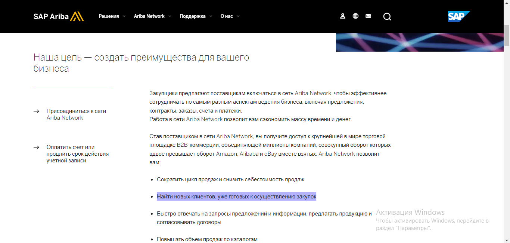

"Многие наши мечты сначала кажутся невозможными, затем неправдоподобными, а потом, когда мы приложили все усилия, становятся неизбежными".
КРИСТОФЕР РИВ
Отдел eSales
2020 год и, соответственно, начало пандемии COVID-19 заставили человечество пересмотреть структуру и методы ведения бизнеса. Всё больше сфер уходят в онлайн, развивается IT структура, создаются новые приложения и делается всё возможное для того, чтобы почти любой вопрос человеку, независимо от того, чем он занимается, можно было решить не выходя из дома. Все эти процессы активно происходят и в логистике. Раньше нашим Клиентам было достаточно комфортно вести свой бизнес по телефону и договариваться о чем-то на встречах. Сейчас это всё остается в прошлом, всё большее количество интересующих нас компаний предпочитают свои решения принимать онлайн. В этом им помогают различные веб-ресурсы, готовые брать на себя ответственность за проверку потенциального подрядчика, его оценку, проведение торгов и, что самое важное, это удобная обработка большого количества информации всего за несколько кликов. Таким образом, мы подошли к основной идее – созданию в ГК КРАФТТРАНС нового отдела, речь о котором пойдет ниже.
Основные задачи и цели
- Проработка новых логистических онлайн-платформ.
- Поиск новых Клиентов и перевозчиков через онлайн-площадки и логистические стартапы, участие в тендерных закупках.
- Усовершенствование присутствия ГК КРАФТТРАНС на различных онлайн-платформах.
- Упор на доставки из Китая и ЕС.
- Качественное создание аккаунта различных подразделений КРАФТТРАНС и предоставление доступа другим сотрудникам через единый центр.
- Обработка тендеров во всей ГК КРАФТТРАНС.
- Обработка всех тендеров в ГК КРАФТТРАНС через единый центр.
- Ознакомление со всеми условиями тендерных процедур, договорных отношений и оценка необходимости участия.
- Подготовка необходимой документации.
- Подготовка окончательного коммерческого предложения и оценка возможностей КРАФТТРАНС.
Преимущества
- Выход на новых Клиентов на различных интересующих рынках, расширение охвата новыми современными способами.
- Новый способ поиска и привлечения перевозчиков онлайн.
- Ускоренная и качественная проработка тендерных процедур.
- Экономия времени сотрудников оперативных отделов и продавцов.
- Увеличение продуктивности работы в ГК.
- Отдел осуществляет вспомогательную функцию, не конкурируя с отделами продаж, КАМами и оперативными подразделениями за Клиентов.
- Сотрудники освобождаются от задачи регистрировать компанию на всевозможных платформах, все имеют и получают доступ к каждой необходимой платформе, аккаунты не теряются после ухода ранее ответственных лиц.
- Для оперативных подразделений проводится обучение по работе на каждой платформе, где необходимо принимать отгрузки. Отдел полностью ориентируется как пользоваться каждой платформой.
Проблемы внедрения, необходимые ресурсы и издержки
- Оплата платформ.
- Время на проработку и принятие решения по сотрудничеству с той или иной платформой.
- Финансирование отдела: оплата труда и поквартальная мотивация в случае успешно выигранных тендеров или привлечения новых подрядчиков.
- Долгосрочная игра на результат.
- Сложная оценка результативности.
Примерная стоимость реализации проекта
35000-55000 евро/год (включена оплата труда сотрудников, мотивация и средства, необходимые для подключения и использования интересующих платформ).
Длительность проекта
Неограниченный срок в случае успешной реализации.
* В случае Вашей заинтересованности дальнейший этап внедрения идеи – более качественная проработка целей и задач отдела, его структуры, поиск и знакомство с более широким списком платформ под различные интересующие нас рынки (на данный момент найдено 20+ различных платформ с выходами на китайский и европейский рынок).
GEP | Supply Chain & Procurement. Помогает компаниям организовать процесс закупок всех видов услуг (европейский и китайский рынок)

Project44. Ведущая мировая платформа передового мониторинга для отправителей грузов и независимых логистических фирм
Cargowise. Платформа для поиска логистических решений для Клиентов и логистических компаний
Bidzaar. Тендеры и закупки
SAP ARIBA. Закупки и поиск новых Клиентов
Advanced finance
Оборачиваемость оборотных средств характеризует скорость оборота оборотных средств от момента оплаты материальных ценностей до возвращения денежных сумм за реализованные услуги на банковский счёт. Если оборачиваемость ускоряется, то это уменьшает потребность компании в оборотных средствах, позволяет использовать денежные и материальные ресурсы более эффективно. Например, использовать их на развитие новых направлений и создание комплекса дополнительных услуг, обучение сотрудников и, как результат, развитие бизнеса, его рост и устойчивое положение на рынке. В связи с этим, в нашем проекте мы не моли не обратиться к этому вопросу. В сфере оказания транспортно-экспедиционных услуг основными факторами ускорения оборачиваемости оборотных средств являются: четкая организация платежно-расчетных отношений; финансовые продукты; скрытые инструменты обеспечения беспрерывности поступления денежных средств. Основываясь на изложенном, предлагаем следующее.
Один из финансовых инструментов, который также позволяет увеличить оборачиваемость денежных средств, - это факторинг.
Вместе с тем, в силу внутренних процессов мы не имеем возможности использовать его в данный момент в полном и необходимом объеме.
Рассмотрим наши предложения на примере факторинга KRAFTTRANS Taurus – банк Pekao (факторинг используется менее, чем на 30%).
Этапы факторинга в KRAFTTRANS Taurus:
- Подписание согласия клиента на оплату банку.
На данный момент только два клиента подписали данное согласие.
Предлагаем: внедрить коммуникацию о подписании ответсвенному лицу напрямую с финансовым отделом клиента. -
Сбор документов для получения денег.
В настоящее время этот процесс представляет из себя ручной сбор пакета документов из различных источников (счет на клиента в Documents, СMR в Orders, заказ в Orders, счет от подрядчика во внутреннем Order).
Предлагаем: внедрить консолидацию данных документов по факторинговым клиентам в одной папке Factoring Files. По факту наличия всех документов должна происходить их отправка сразу на e-mail ответсвенному по факторингу лицу (такой процесс работает в ДСГ).
В КРАФТТРАНС Атлас по данному пункту предлагаем предоставить доступ cпециалисту по факторингу к QlikView, где сделать вкладку Factoring c выгрузкой информации о факторинговых клиентах/номере акта/счета-фактуры/сумме документа/планируемой дате платежа. -
Сроки фактурирования клиентов на факторинге.
Ожидание ответственным по факторингу выставления счета, предоставление CMR и счета подрядчика со стороны ОА/бэк-офиса. Сейчас процесс не имеет обязательных точек дедлайна.
Предлагаем: внедрить специальный статус клиентов на факторинге, определить дедлайн выставления и предоставления документов в папку Factoring Files через день после плановой выгрузки в Orders, что позволит ускорить возможность получения денег со дня окончания оказания услуги.
Овернайт – это размещение денежных средств на депозите на один рабочий день. Т.е. после завершения планируемых на сегодняшний день расчетов, бухгалтер может переводить оставшиеся суммы на счет овернайта и возвращать их на следующий день.
Причем, используя данный инструмент у нас отсутствуют факторы риска, а также финансовые затраты на продажи и маркетинг.
Единственным пунктом затрат является время сотрудника на оформление овернайта и осуществление переводов. Однако, в некоторых банках можно настроить автоматическое зачисление денег на овернайт. В связи с этим, расчет материальных затрат не целесообразен.
Процент по овернайту, например, в России, в зависимости от банка и условий, может колебаться от 1% до 3% годовых.
При отсрочке платежей до следующего рабочего дня такой механизм может приносить прибыть компании.
Обеспечить беспрерывное поступление денег на счет, а также дополнительную статью прибыли может привлечение клиентов на абонентское обслуживание.
Даже при условии отсрочки платежа денежные средства будут поступать на счет ежемесячно.
В пакеты абонентского обслуживания могут входить следующие услуги:
- консультации (в том числе, по оформлению документов, маршрутам перевозки, действиям при повреждении, утере груза, рискам при заключении договоров перевозки, ответам на запросы таможенных органов, по вопросам работы таможенных органов, по задержкам и ситуациям на границах, по таможенному оформлению при возврате товара, по вопросам перевозки образцов для первых продаж, растаможка этих образцов нашими силами и другое),
- маркетинговые исследования рынка, на котором представлен клиент,
- ежеквартальное предоставление тарифов рынка перевозок по соответствующим направлениям,
- предоставление услуг бэк-офиса на аутсорсинге,
- предоставление скидок на отдельный вид услуг,
- предоставление услуг по факторингу или «покупке долгов» (в зависимости от резиденции нашей компании, которая будет предоставлять данную услугу, юридическое оформление и название будут отличаться). Необходима тарификация за рассмотрение каждого кейса, даже при условии нашего отказа от предоставления факторинга по конкретному должнику. В целом, предоставление факторинга дороже кредитных средств. Соответственно, можно использовать это преимущество в рамках пакетов на абонентское обслуживание для привлечения клиентов, либо развить в последующем в отдельную услугу. Вместе с тем, это дает нам дополнительные преимущества по привлечению клиентов, которые вместо контроля и выстраивания нескольких рабочих процессов могут обратиться к нам.
Клиент дифференцированно выбирает необходимый ему пакет услуг. При этом услуга по консультированию должна быть включена в каждый пакет, хотя бы в минимальном количестве, и оплачивается клиентом вне зависимости от того, были ли использованы эти часы. Услуги, использованные сверх пакета, оплачиваются клиентом дополнительно.
Преимущество абонентского обслуживания в том, что клиент получает доступ к тем услугам, которые недоступны при другом виде сотрудничества.
В случае положительного опыта абонентского обслуживания можно внедрять и предлагать клиенту дополнительные услуги.
Прибыль при реализации будет оцениваться не только в оплате времени, которое в любом случае тратится на взаимодействие с клиентом, но и в расширении взаимодействия с клиентом, расширении комплекса предоставляемых услуг, увеличении оборачиваемости денежных средств.
Оборачиваемость оборотных средств – это то, чем можно заняться уже сегодня. Это не требует масштабных инвестиций и длительных этапов реализации. Это то, что поможет укрепить позиции уже сейчас. И это то, что требует постоянного развития, поиска новых инструментов и решений. В связи с этим предлагаем обратиться к данному вопросу. Возможно, использовать какие-либо из предложенных инструментов и решений. А также укрепить штат неоперативных сотрудников (финансовый департамент, юридический, маркетинг, бэк-офис) и технические процессы в компании, т.к. это является фундаментом, обеспечивающим оборачиваемость оборотных средств и расширение перечня предоставляемых клиентам услуг.
Международный переезд «под ключ»
Ай лайк ту мув IT мув IT
Организация международного переезда по принципу «от двери до двери» для частных лиц, а также организаций: перевозка мебели, личных вещей, офисной мебели, крупногабаритных предметов, декораций, оборудования, архивов, ценных бумаг и проч. Полный комплекс услуг переезда «под ключ», исключающий необходимость участия заказчика в процессе.
Мувинг – предоставление услуг по организации переездов. Несмотря на то, что услуга по организации переездов не является новой и на рынке уже работает некоторое количество операторов, в том числе и представительства крупных международных компаний, «мувинг» характеризуется как развивающийся бизнес, рынок в настоящее время не насыщен и у него хороший потенциал, т.к. услуга актуальна и заказчики ценят время, надежность и качество. Это может предоставить только профессиональная команда.
Международный переезд имеет много тонкостей и нюансов, поэтому востребованными являются те компании, которые не специализируются исключительно на перевозке личного имущества за границу, а могут оказать весь логистический комплекс – упаковку, погрузочно-разгрузочные, складские операции, подготовку необходимой документации, страхование груза, растаможку груза, не требующую физического присутствия заказчика на таможне, доставку в пункт назначения с расстановкой мебели и оборудования, а также дополнительные услуги по требованию заказчиков.
Комфортный переезд без стресса и потерь может обеспечить только профессиональный партнер, и КРАФТТРАНС как транспортно-экспедиционная компания со штатом профессионалов, надежными подрядчиками, широкой географией перевозок, возможностью использовать любой вид транспорта, а также осуществлять таможенные операции может стать тем самым надежными выбором, которому можно доверить весь цикл.
Потенциальные клиенты
К услугам профессиональных мувинговых компаний традиционно обращаются дипломаты, но в последнее время услуга по международному переезду востребована среди физических лиц и организаций, решивших осуществить релокацию. На сегодняшний день релокейт популярен среди крупных и мелких IT-компаний. Также активными клиентами являются банки – они часто открывают филиалы, и приходится перевозить ценное оборудование. Услугами мувинга часто пользуются франчайзинговые фирмы. Кроме того, всегда есть спрос на временный ввоз и вывоз имущества с применением Карнета АТА.
Содержание услуги
Сопровождение процесса персональным менеджером
Менеджер консультирует по всем вопросам, уточняет детали и подбирает оптимальное решение любой задачи. При необходимости осуществляет выезд на объект проведения работ. Производит оценку перевозимого груза, при необходимости с привлечением оценщика. Помогает составить опись имущества.
Подбор оптимального маршрута и транспорта
Выбирается с учетом дальности переезда, срочности, характеристик груза, а также предпочтений заказчика.
Подготовка документов для таможенного оформления и транспортировки
Подготовка документов с учетом требования стран вывоза, ввоза, транзита. Оформление необходимых разрешений, например, для предметов, представляющих историко-культурную ценность необходимо получение разрешения Министерства культуры.
Сортировка вещей и их упаковка, маркировка, погрузо-разгрузочные работы
Подбор упаковки, обеспечиваю-
щей сохранность груза, маркировка грузовых мест, разборка-сборка мебели и оборудования, монтаж-демонтаж техники, погрузо-разгрузочные работы.
Распаковка груза, расстановка мебели в пункте назначения. Расстановка и подключение оргтехники, бытовой техники и т.д.
Вывоз мусора, образовавшегося в процессе работ.
Таможенного оформление
Таможенные операции, не требующие физического присутствия заказчика на таможне, подготовка всей необходимой документации
Доставка груза
Доставка надежным проверенным перевозчиком, имеющим CMR-страхование.
Хранение груза
Часто возникает необходимость временного хранения имущества на складе, например, если заказчик сможет принять груз в пункте назначения сразу. Предоставляется услуга ответственного хранение личных вещей, мебели, предметов интерьера на любой срок на охраняемом складе с видеонаблюдением. Хранение документов организаций, частных лиц и т.д.
Страхование груза
Личные вещи будут застрахованы от всех рисков на всем этапе перевозки.
GPS-трекинг
Заказчик в любой момент может узнать, где и на какой стадии транспортировки находится груз.
Временный ввоз-вывоз
Возможность организации времен-
ного вывоза картин и иных культ.ценностей для выставок и др.
Оценка рынка и выгоды
В США бизнес по организации переездов относится к категории самых рентабельных, а в СНГ он только начинает своё развитие. В то же время на рынке СНГ в последние годы наблюдается стремительный рост спроса на мувинговые услуги.
Компании, которые уже работают на рынке, получают стабильные доходы. Профессиональная организация переезда является достаточно прибыльным видом деятельности. По оценкам специалистов, доля прибыли мувера составляет от 30 до 80% в общей цене заказа. Также специалисты отмечают, что маржинальность мувингового бизнеса, построенного на системе экспедирования, составляет от 10 до 20 процентов.
Ресурсы
Для оказания услуги в компании КРАФТТРАНС уже имеется штат оперативных сотрудников, отвечающих за организацию перевозки, а также специалисты таможенного отдела. Используется наработанная база проверенных подрядчиков – перевозчики, склады, таможни, брокеры. Необходим сотрудник, курирующий услугу переезда – персональный менеджер, который сопровождает перевозку, осуществляет поиск и проверку наемных сотрудников (грузчики, оценщики и др.), координирует взаимодействие всех участников перевозки. Кроме того, необходима реклама и продвижение услуг с использованием существующих ресурсов отдела маркетинга.
Идея завтрашнего дня
ПРОЛОГ
— О, это отличная идея!
— Изобретение колеса было отличной идеей. Теория относительности была замечательной идеей. А это просто предложение. И довольно отстойное к тому же, оно сумасшедшее и нереальное. Проще всех убедить в успехе 4х дневной рабочей недели.
— Эта идея настолько безумна, что вполне может и сработать. Это даже лучше, чем беспилотные грузовики. Туда уже повлази все кто мог.
— Я знаю.
ВСТУПЛЕНИЕ
10 лет назад никто не верил в биткоины и не покупал их и за 10 долларов. Сегодня все сходят с ума и готовы покупать их за 35 000 долларов США. Во что же никто не верит сегодня и считает, что это пустая трата времени – МЕТАВСЕЛЕННАЯ.
В современном представлении метавселенная — это следующая ступень развития интернета, т. е. единое цифровое пространство, объединяющее физический мир с дополненной и виртуальной реальностями. Внутри этой «вселенной» можно делать все то же, что и в обычном мире: общаться, заниматься шопингом, работать, отдавать себя творчеству, строить бизнес. Сбережения из реальной жизни можно потратить в метавселенной. И наоборот. Это своеобразный мир, в котором можно управлять своим аватаром, слияние физической, дополненной и виртуальной реальности в общем онлайн-пространстве. Если сложно представить, вспомните фильмы типа «Матрицы», «Аватара» и «Первому игроку приготовиться».
САМА ИДЕЯ
Если раньше метавселенная в основном ограничивалась NFT-токенами и игровыми предметами, то теперь она проникает и в реальный сектор экономики. И одно из наиболее перспективных направлений — рынок недвижимости, ресторанный бизнес, маркетинг… НО это только начало.
«— Надо зарегистрировать компанию КРАФТТРАНС в метавселенной. Надо быть первой логистической компанией, зарегистрированной в виртуальном мире. Быть первопроходцами, самим интегрироваться в этот мир и начать зарабатывать пока кто-нибудь это не сделал за нас.
— А как это сделать?
— Я не знаю».
В новом году многие компании начали использовать метавселенную и для работы.
К примеру, агентство недвижимости eXp Realty одним из первых открыло офис в метавселенной. Их сотрудники собираются в нем в виде аватаров, которые работают на виртуальном острове.
А еще в этом году метавселенная будет интегрирована в Microsoft Teams. Главным элементом новой реальности будет сервис Mesh, который с помощью VR и AR позволит создавать и посещать виртуальные офисы и другие пространства. Например, гендиректор Microsoft Сатья Наделла рассказывал, как с помощью Mesh посещал больницу в Британии, завод Toyota и Международную космическую станцию.
Из достижений — команда Microsoft уже сделала цифровую копию офиса компании Accenture, а для пивоваренной компании Anheuser Busch — копию ее фабрик и логистических цепочек, которые совмещены с реальными базами данных.
Смотрите, раз мы говорим о том, что метавселенные отражают реальный мир, в ней тоже существует экономика. Поэтому NFT пренепременно стали ее частью. NFT это код ERC721. Стоит пояснить, что токен ERC20 – выполняет роль одинаковых жетонов, например, на метро каждый идентичен остальным. В ERC721 напротив каждый токен уникален, и содержит ссылку на какой-либо актив. Таким образом, можно сказать что NFT – это как цифровой сертификат собственности, так и реальной. Прикрепить NFT можно к любому цифровому предмету: от картины до забавного ролика. При этом токен содержит всю информацию о сделке: доказывает происхождение товара, подтверждает личность его собственника и время сделки. Например, российский художник Покрас Лампас оцифровал свою работу в NFT и продал за 2,5 млн рублей.
«— Так а это вообще реально открыть действующую компанию
в виртуальном мире?
— Судя по всему да, другие ведь уже открылись.
— А где ее надо открывать? Где регистрировать?
— Много вариантов, надо кинуть монетку».
ТЕКУЩИЕ ПРИМЕРЫ МЕТАВСЕЛЕННОЙ
Хотя до полноценного появления метавселенной в полном ее представлении нам еще достаточного далеко, отдельные моменты уже реализуются на различных платформах.
Одной из платформ выступает компьютерная игра Fortnite, в ней продолжительное время реализуется интеграция различных брендов на одной площадке. Так, в апреле 2020 года Трэвис Скотт провел концерт в игре; в декабре 2019 Disney устроила виртуальное интервью с режиссером «Звездных войн»; Epic Games устраивает в Fortnite различные события, привязанные к релизам в реальном мире, так, наблюдается партнерство с DC, Nike, Lionsgate, Marvel, Microsoft, Sony и другими брендами. То есть, Fortnite уже стал платформой, где пересекаются разные вселенные.
Достаточно старой платформой, представляющей раннюю версию метавселенной является Second Life. Second Life — не столько игра в обычном понимании, сколько виртуальное пространство с определёнными свойствами. Пользователи получают возможность выбрать наиболее приемлемый для них способ виртуального существования — участие в сообществах по интересам, создание виртуальных товаров, строительство, создание виртуальных предметов искусства, общение в чате или голосом, путешествия по многочисленным примечательным местам виртуального мира. Стоит сказать, что проект был разработан и запущен в 2003 году.
Кроме того, есть различные платформы для профессиональных задач, например, недавно анонсированный Microsoft Mesh. Он позволяет работать друг с другом в виртуальном пространстве, которое накладывается на реальный мир. Люди могут общаться, взаимодействовать и работать виртуальными 3D-моделями, физически находясь в разных местах — через виртуальные аватары.
Другим примером выступает VR-проект Facebook, который претендует стать основной метавселенной, — социальная среда Horizon. Среди особенностей Horizon — трекинг глаз, лица и движений человека, с помощью чего VR-аватары двигаются более плавно и могут демонстрировать мимику.
Есть и спортивные платформы: Zwift — это виртуальная платформа для велосипедистов, где они тренируются в межсезонье совместно, не выходя из дома. Данные о скорости передаются с тренажеров, пользователь видит себя и соперников в виде аватаров на трассе.
«— Ладно, с тем как ее там открыть мы разберемся. Пожалуй, надо сначала понять интересна ли эта идея окружающим.
— Это даааааа.
— А сколько стоит открыть там компанию?
— Все или ничего».
РЕАЛЬНЫЕ ПРИМЕРЫ
Продажа предметов искусства далеко не единственное направление чем занимаются в метавселенных. К примеру, в западных университетах уже планируют NFT (уникальные токены) не для денежного обмена, а для доказательства прохождения курса. Согласитесь, что сертификат о завершении обучения можно легко подделать в фотошопе. А тут мы получаем целую базу с реальными выпускниками, при этом доступ к ней открыт каждому.
«— О, мы же можем услугу затокенить и продать ее на встрече в виртуальном офисе другой компании, а реализовать в реальном мире!!! Вот сюр же.. Или вот! Например организовать виртуальный переезд или виртуальную доставку чего-либо как юр. так и физ. лицам…
— Можем. В недалеком будущем можем и не такое.
— Даааа, дожить бы…»
Meten EdtechX — компания поставщиков услуг омни-обучения английскому языку в Китае пошла еще дальше: у них в планах использовать технологию для проверки подлинности учебных программ, созданных экспертами.
McDonald’s зарегистрировала серию товарных знаков для виртуальных заведений. Таким образом сеть ресторанов быстрого питания присоединилась к длинному списку компаний, объявивших о планах заработать на Web 3.0, включая метавселенную, пишет Business Insider. 4 февраля компания подала 10 заявок на регистрацию товарных знаков в Бюро по патентам и товарным знакам США. Один из товарных знаков предназначался для «виртуальных продуктов питания и напитков», включая NFT, а другой включал «управление виртуальным рестораном онлайн с доставкой на дом». Компания также зарегистрировала торговую марку развлекательных услуг и мероприятий под брендами McDonald’s и McCafe, включая «реальные и виртуальные онлайн-концерты». Товарные знаки защитят идею сети McDonald’s в метавселенной, которая может продавать как виртуальную, так и реальную еду.
Южнокорейский технологический гигант Samsung открыл виртуальную версию своего флагманского магазина 837 в Нью-Йорке, но теперь вы можете посетить его внутри Decentraland. Виртуальный магазин 837X служит витриной для последних анонсов компании на выставке Consumer Electronics Show в Вегасе. Он включает в себя три области: Театр связи, Лес устойчивости и Сцена кастомизации. В первые дни мероприятия посетители могли даже выиграть ограниченную серию цифровой моды. Магазин Samsung в Decentraland будет открыт в течение ограниченного времени, но Samsung планирует запустить больше магазинов 837X на других платформах.
В 2021 году Coca-Cola запустила свою первую коллекцию NFT вместе с виртуальным мероприятием в Decentraland. Все это во имя Дня дружбы 30 июля. Coca Cola организовала виртуальную вечеринку поверх своего виртуального здания коксовой банки. Посетители могли выиграть очень редкие носимые устройства, и вечеринка начала аукцион пакета Coca Cola Friendship Box NFT.
В декабре 2021 года Nike приобрела RTFKT (Artifact) Studios, цифровой модный бренд с сильным присутствием в сообществе NFT. В результате Nike теперь имеет доступ к премьерному цифровому модному бренду и метавселенной, готовой к аватарам CloneX. RTFKT уже запустил различные носимые устройства, в том числе NFT, которые будут использоваться в Decentraland.
Конечно, не сама Domino's шагнула в метавселенную, а энтузиасты-разработчики, которые позволили гражданам США заказать пиццу. Весь процесс заказа происходил из виртуального мира Decentraland. Это показывает, что бренды и услуги также найдут свой путь в метавселенную даже без усилий со стороны самих указанных брендов. Кроме того, это показывает, что бизнес в метавселенной может дополнять бизнес в реальном мире.
Венчурный инвестор и активнейший популяризатор метавселенных Мэтью Болл, весной обещающий выпустить целую книгу об этом феномене, уже успел сформулировать семь признаков метавселенной:
- Бесконечное существование.
- Работа в реальном времени и независимость от внешних факторов.
- Неограниченный размер аудитории.
- Полностью функционирующая экономика.
- Единое цифровое целое — совмещение открытого и закрытого, физического и виртуального.
- Совместимость данных, предметов, активов — можно передавать что-то из одного приложения в другое.
- Наполненность контентом и опытом, в том числе пользовательским.
«— Будущее – это хорошо, но что нам делать сегодня с этой компанией в виртуальном мире?
— Я думаю Цукерберг сам до конца не понимает.
— Но мы не Цукерберг, мы реальный бизнес, который очень болезненно реагирует на внешний мир. Нам надо зарабатывать.
— Знаешь, мне кажется, что на сегодняшний день, даже для всех вышеперечисленных компаний это все не понятно. Они зарегистрировались/открылись там в первую очередь для маркетинга. Ты представь какое это информационное цифровое пространство…….. Быть первыми, быть среди лучших. Да, сегодня это мощный пиар, это новые клиенты, это новые возможности.
— Хм, а ведь это и престижно. Кому-то для статуса нужны дорогие машины и часы, кто-то инвестирует в бриллианты и биткоины, а кто-то уже сегодня делает шаг в неизвестность, чтобы зарабатывать завтра.
— Да. Осталось только разобраться как это сделать и совершить прорыв в сфере логистических перевозок».
Команда StartUpеров - кто они и почему они?
Дмитрий Гамзович - ушел, но обещал вернуться. Born to be free
Оксана Бавтрук - 15 лет в Крафттранс. Born to be wild
Евгения Юрчик - наш европейский советник. Born to power
Дарья Суша - надежная как BMW. Born to be strong
Карина Лапикова - запатентовала наш проект. Born to be right
34 года - это наш совместный опыт в логистике. Знаем, как приготовить пельмени без помощи мамы и как извлечь прибыль с помощью данного проекта.
Мы все из разных отделов - оценка 360 градусов дает идеям проекта гарантии реализации и свежесть наполнения.
"Если ты способен выдумать что-то, ты можешь и сделать это" - Уолт Дисней.